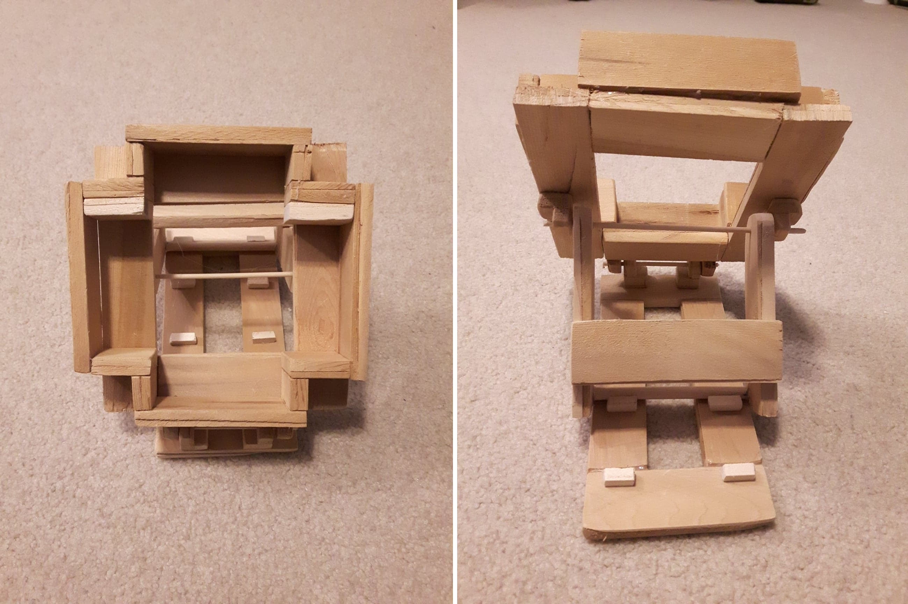
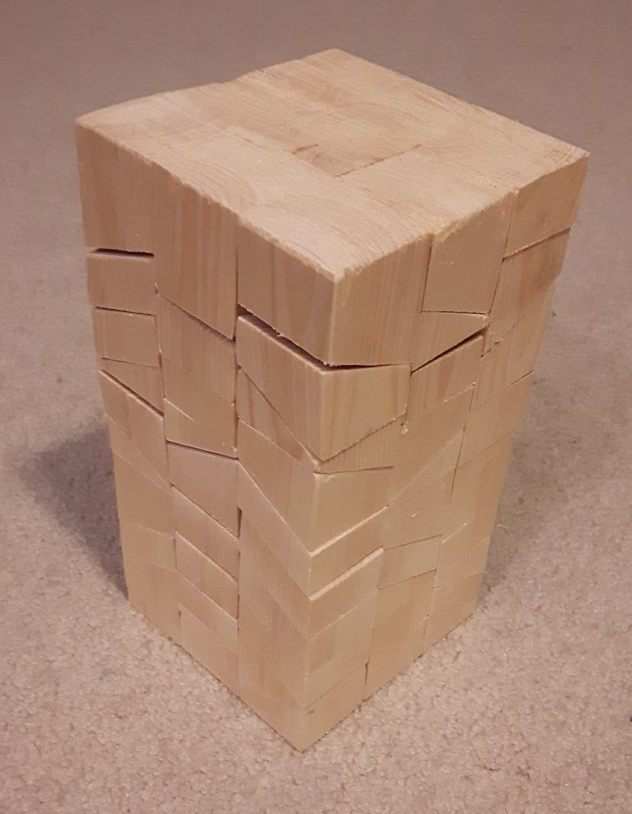

Date Created: January 2018
I made an adjustable phone stand out of wooden planks and dowels. It was made to fit a Samsung S5/S6 phone either vertically or horizontally. It also has 3 different angles which it can adjust to.
Date Created: August 2018
This project combines my interest in woodworking and my skill with puzzles, specifically ones in 3D. The materials for the project were extremely simple: Wood, a saw and glue. I created a stack tower puzzle which only fits together one way. Above are the individual pieces which each consist of 9 blocked fragments that stack into each other. The final project, fully assembled is shown below.
